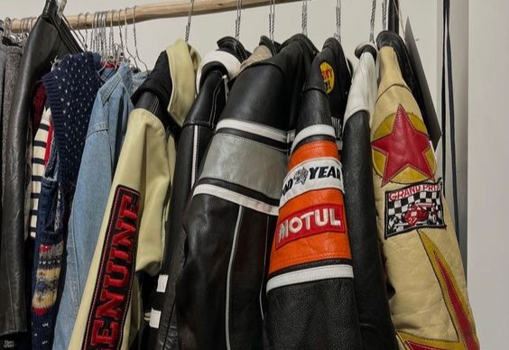
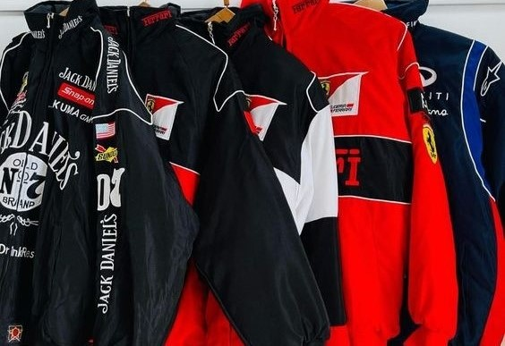

Bem-vind@ ao LauDJ's Store!
A vibração que você procura, o estilo que você merece!
 
Em uma cidade vibrante e cheia de energia, havia uma loja chamada LauDJ's Store. Fundada por Laura e Diego, dois apaixonados por música e moda, a loja rapidamente se tornou o coração pulsante da cena local. Djovane, um DJ renomado, trazia sua expertise em trilhas sonoras para criar playlists que faziam os clientes se sentirem em uma festa, mesmo enquanto escolhiam seus produtos. Laura, uma estilista criativa, combinava tendências de moda com toques personalizados, garantindo que cada peça fosse única e refletisse a personalidade de quem a usava. A LauDJ's Store não era apenas uma loja; era um ponto de encontro para aqueles que buscavam mais do que apenas produtos. Era um lugar onde a música e a moda se encontravam, criando uma experiência sensorial completa. Cada canto da loja tinha uma história para contar, desde as paredes decoradas com vinis vintage até as vitrines que exibiam as últimas tendências com um toque de exclusividade. Os clientes não apenas saíam com suas compras, mas com uma sensação de ter participado de algo especial. A loja se tornou um símbolo de expressão pessoal, uma celebração da cultura pop e um espaço onde a criatividade era a norma. Assim, LauDJ's Store continuou a ser um farol de estilo e ritmo, onde cada visita era uma nova descoberta e cada compra uma forma de se destacar.
Siga-nos nas redes sociais!